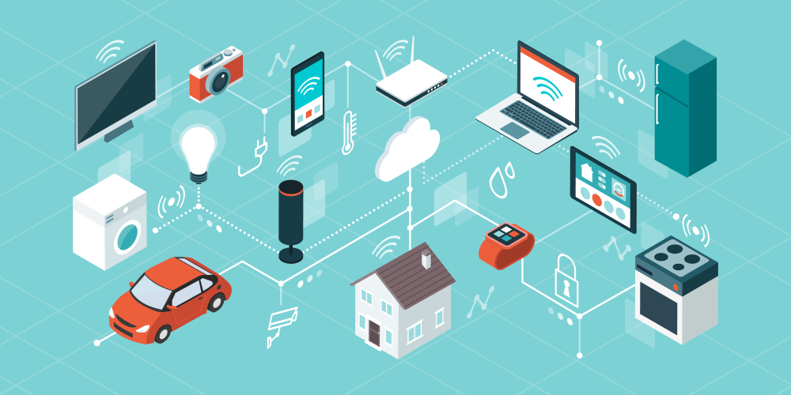

O que é Internet das Coisas (Internet of Things)?
A Internet das Coisas (IoT) descreve a rede de objetos físicos incorporados
a sensores,
software e outras tecnologias com o objetivo de conectar e trocar dados com outros dispositivos e
sistemas pela internet. Esses dispositivos variam de objetos domésticos comuns a ferramentas
industriais sofisticadas. Com mais de 7 bilhões de dispositivos IoT conectados hoje, os
especialistas esperam que esse número cresça para 10 bilhões em 2020 e 22 bilhões em 2025.

Por que a Internet das Coisas (IoT) é tão importante?
Nos últimos anos, a IoT se tornou uma das tecnologias mais importantes do
século XXI.
Agora que podemos conectar objetos do cotidiano - eletrodomésticos, carros, termostatos, babás
eletrônicas -
à Internet por meio de dispositivos incorporados, é possível uma comunicação perfeita entre pessoas,
processos e outras coisas.
Por meio da computação de baixo custo, nuvem, big data, análise avançada e tecnologias móveis,
coisas físicas podem compartilhar e coletar dados com o mínimo de intervenção humana. Nesse mundo
hiperconectado, os sistemas digitais podem gravar, monitorar e ajustar cada interação entre itens
conectados.
O mundo físico encontra o mundo digital, e eles trabalham em conjunto.
Quais tecnologias tornaram a IoT possível?
Embora a ideia de IoT já exista há muito tempo, uma coleção de avanços
recentes em diversas tecnologias diferentes tornou-a prática.
- Acesso a tecnologia de sensores de baixo custo e baixa potência. Sensores acessíveis e confiáveis
estão possibilitando a tecnologia IoT para mais fabricantes.
- Plataformas de computação em nuvem. O aumento da disponibilidade de plataformas em nuvem permite que
empresas e consumidores acessem a infraestrutura de que precisam para aumentar a escala sem precisar
gerenciar tudo.
- Machine learning e análise avançada. Com os avanços em machine learning e análise avançada, além do
acesso a quantidades grandes e variadas de dados armazenados na nuvem, as empresas podem obter
insights de maneira mais rápida e fácil. O surgimento dessas tecnologias aliadas continua a
ultrapassar os limites da IoT e os dados produzidos pela IoT também alimentam essas tecnologias.
- Inteligência artificial (IA) conversacional. Os avanços nas redes neurais trouxeram o NLP
(natural-language processing, processamento de linguagem natural) aos dispositivos de IoT (como
assistentes pessoais digitais Alexa, Cortana e Siri) e os tornaram atraentes, acessíveis e viáveis
para uso doméstico.